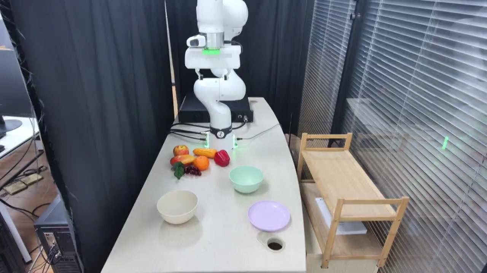

TAVP · 006_franka_stack_bowls_standard_success
Franka stack bowls standard success

Visual review action_review.json
{
"video_id": "006",
"review_method": "Visual inspection of every second decoded frame across the entire MP4 plus native-resolution transition frames, followed by native initial PNG",
"review_source_video": "/Users/nijiachen/Downloads/Robotvideo/TAVP/006_franka_stack_bowls_standard_success/original/video.mp4",
"source_frame_count": 2004,
"source_fps": 30.0,
"inspected_frame_stride": 2,
"inspected_sampled_frame_count": 1002,
"reviewed_contact_sheets": [
"sheet_001.jpg",
"sheet_002.jpg",
"sheet_003.jpg",
"sheet_004.jpg",
"sheet_005.jpg",
"sheet_006.jpg",
"sheet_007.jpg",
"sheet_008.jpg",
"sheet_009.jpg",
"sheet_010.jpg",
"sheet_011.jpg",
"sheet_012.jpg",
"sheet_013.jpg",
"sheet_014.jpg",
"sheet_015.jpg",
"sheet_016.jpg"
],
"native_detail_frames": [
200,
400,
430,
510,
540,
600,
700,
770,
780,
800,
900,
910,
920,
940,
960,
980,
1020,
1030,
1040,
1060,
1180,
1390,
1400,
1420,
1500,
1650,
1710,
1730,
1740,
1890,
1920,
2003
],
"initial_scene": "Fixed elevated oblique view of a pale rectangular tabletop. A white articulated robot with green status lights and a two-finger gripper stands at the rear, with the open gripper raised. An upright mint-green bowl sits near the middle-right; an upright cream bowl is nearer the front-left. A lavender shallow dish sits at the front-right beside a circular cable hole. A cluster of colorful fruit and vegetable props lies left of the robot base. Black curtains form the rear and left background; window blinds and an empty wooden two-tier rack are on the right.",
"observed_sequence": [
{
"start_frame": 0,
"end_frame_inclusive": 210,
"action": "The raised open gripper moves rightward and forward to hover above the mint-green bowl.",
"confidence": "high"
},
{
"start_frame": 211,
"end_frame_inclusive": 510,
"action": "The gripper lowers to the right side of the mint bowl and closes around its rim, with one finger inside and the other outside. The bowl remains on the tabletop during alignment and grasp.",
"confidence": "high"
},
{
"start_frame": 511,
"end_frame_inclusive": 640,
"action": "The arm lifts the mint bowl clear of the tabletop, keeping its opening facing upward.",
"confidence": "high"
},
{
"start_frame": 641,
"end_frame_inclusive": 800,
"action": "The arm carries the bowl forward over the lavender shallow dish, then lowers it onto the dish.",
"confidence": "high"
},
{
"start_frame": 801,
"end_frame_inclusive": 930,
"action": "The mint bowl rests upright on the lavender dish; the gripper opens and releases its rim.",
"confidence": "high"
},
{
"start_frame": 931,
"end_frame_inclusive": 1040,
"action": "The empty open gripper withdraws upward, leaving the mint bowl stable on the lavender dish.",
"confidence": "high"
},
{
"start_frame": 1041,
"end_frame_inclusive": 1420,
"action": "The arm moves left and lowers the open gripper to the cream bowl, then closes around its right rim.",
"confidence": "high"
},
{
"start_frame": 1421,
"end_frame_inclusive": 1580,
"action": "The robot lifts the cream bowl and carries it upward and right toward the mint bowl.",
"confidence": "high"
},
{
"start_frame": 1581,
"end_frame_inclusive": 1735,
"action": "The cream bowl is lowered upright into the mint bowl, forming a nested stack on the lavender dish; the fingers open to release it.",
"confidence": "high"
},
{
"start_frame": 1736,
"end_frame_inclusive": 2003,
"action": "The open gripper briefly remains near the stacked bowls, then retracts upward. The cream bowl remains nested in the mint bowl on the lavender dish.",
"confidence": "high"
}
],
"multi_step": true,
"selected_segment": {
"start_frame": 0,
"end_frame_exclusive": 1021,
"reason": "Retain the first complete bowl transfer, including stable placement, released fingers, and visible upward withdrawal. End before the subsequent approach to the separate cream bowl.",
"terminal_state": "The mint-green bowl stands upright on the lavender shallow dish at the front-right. The open empty gripper has withdrawn above it; the cream bowl and produce props remain in their original positions."
},
"full_sequence_prompt": "The robotic arm sets the mint-green bowl upright on the lavender dish, then picks up the cream bowl and nests it inside the mint-green bowl. Keep the camera fixed; preserve robot geometry, physically valid joint motion, and normal gripper opening and closing.",
"world_model_prompt": "The robotic arm picks up the mint-green bowl and sets it upright on the lavender dish. Keep the camera fixed; preserve robot geometry, physically valid joint motion, and normal gripper opening and closing.",
"uncertainties": [
"The lavender base object is visibly shallow and plate-like; its exact bowl-versus-plate category is ambiguous."
],
"evidence_frame_indices": [
0,
400,
600,
780,
1020,
1500,
1730,
2003
],
"prompt_provenance": "visually_authored_from_video_and_initial_frame",
"selected_execution_status": "success",
"prompt_protocol": "concise_action_v1",
"review_source_original_video": "006_franka_stack_bowls_standard_success/original/video.mp4",
"review_source_crop_rectangle": null
}